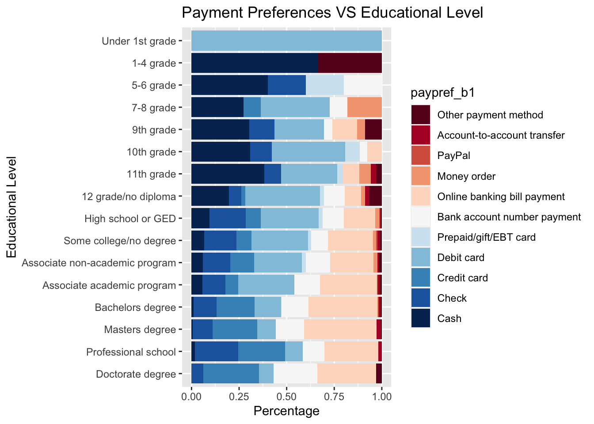
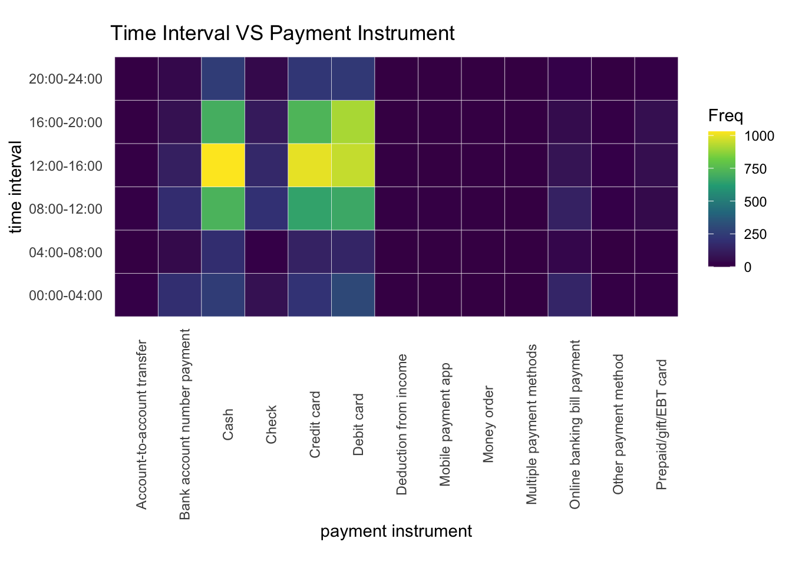

Chapter 5 Results
5.1 Part I. Payment choice and Individual features
The individual background will highly likely influence their behaviors, including payment instrument preferences. We selected three features from the data sets to analyze, income, age, and educational level. Below is a stacked bar chart that shows the correlation between paying habits and income level. We standardized the data at each income level to better present every group’s preferences.

In the graph, we used instrument preference of bill payment. Bill payment is the regular reception of compensation for a repeated service, like rent. The graph shows a decreasing trend in cash payments and debit card payments as the income level go up. The wealthier groups tend to use credit cards and online banking bill payments more often. Besides these instruments, check and bank account number payment are also popular among all groups. These differences could be a result of different bill types, bill amounts, and merchants. For example, it is more likely to pay small amounts of bills with cash.
The next graph indicates the payment preferences of different age groups. Similarly, we used bill payment preferences and standardized the data for better presentation.

The result shows that payment preference does change along with age group. Cash and debit card payments are negatively correlated with age, while there is a clear positive correlation between online banking. Overall, the elders use checks more often. The general trend is similar to the last graph. A reason could be the elders are usually wealthier. A new discovery is that Paypal is more popular among teenagers.
The third graph is about preferences among people of different educational levels.

An outlier is the Under 1st-grade group, which only uses debit cards. The population of that group is very small so that group is not very informative. There is an overall decreasing trend in cash and debit card payments, and increasing popularity of credit card and online banking bill payments as the educational level go up. The educational level also has a certain influence on income level. Therefore, the trends are similar.
From the three stacked bar plots, we can see that cash, cards, online banking, and checks are the most popular instruments for all groups. Credit cards are more popular in the elder, higher educated, and wealthier groups while debit card and cash payments show the opposite trend. People in wealthier, elder and higher educated groups are more likely to have high-level credit cards and more access to online banking payments.
5.2 Part II. Payment type and Transaction features
After exploring the payment preference of various consumer groups. We want to see how people actually pay in different transactions. In Part II, we analyze how transaction time and merchant types affect payment instruments. The first heatmap shows the correlation between transaction time in a day and paying method.

We can see that most transactions happen in the daytime from 8 am to 8 pm. The most popular instruments are cash, credit card, and debit card. Check is not as popular as in Part I because we counted in daily payments, which are hardly done through checks. To better present how payment instruments change over time intervals, we standardized the data over each time interval in the next plot.
The heatmap demonstrates that there are changes in payment methods in different time intervals. Although generally cash and cards are the most popular, bank account number payment and online banking bill payment are as common from 00:00 to 04:00. A large portion of stores is closed at that time. Also, there can be a large impact from online shopping in this time interval.
The third graph presents the correlation between payment methods and merchant types. The data is standardized over payment types. Merchant types presented as digits in the graph. The detailed merchant types are right below the heatmap.

Merchant number meaning: 1 - Grocery stores, convenience stores without gas stations, pharmacies
2 - Gas stations
3 - Sit-down restaurants and bars
4 - Fast food restaurants, coffee shops, cafeterias, food trucks
5 - General merchandise stores, department stores, other stores, online shopping
6 - General services: hair dressers, auto repair, parking lots, laundry or dry cleaning, etc.
7 - Arts, entertainment, recreation
8 - Utilities not paid to the government: electricity, natural gas, water, sewer, trash, heating oil
9 - Taxis, airplanes, delivery
10 - Telephone, internet, cable or satellite tv, video or music streaming services, movie theaters
11 - Building contractors, plumbers, electricians, HVAC, etc.
12 - Professional services: legal, accounting, architectural services; veterinarians; photographers or photo processers
13 - Hotels, motels, RV parks, campsites
14 - Rent for apartments, homes, or other buildings, real estate companies, property managers, etc.
15 - Mortgage companies, credit card companies, banks, insurance companies, stock brokers, IRA funds, mutual funds, credit unions, sending remittances
16 - Can be a gift or repayment to a family member, friend, or co-worker. Can be a payment to somebody who did a small job for you.
17 - Charitable or religious donations
18 - Hospital, doctor, dentist, nursing homes, etc.
19 - Government taxes or fees
20 - Schools, colleges, childcare centers
21 - Public transportation and tolls
The heatmap shows a clear correlation between payment methods and merchant types. People tend to use cash on small-amount payments and hardly on large transactions such as hotels and flight tickets. Credit cards are more popular for daily expenses like dinner or travels than for formal bills like tuition and taxes. Checks have the opposite properties to credit cards; they are used to pay for formal bills rather than frequent payments. Online banking and bank account payments are similar to checks except that they are less common than checks in in-person payment situations like donations and hospital bills.
We can see those card payments are the most commonly used among all groups of people and in all transaction situations. Therefore, we will specifically focus on card payments in Part III.
5.3 Part III. Cardholders and their preferences
In this part, we will explore how much do cardholders prefer paying by cards, how many cards do they have and how much rewards they get from the cards.
The data is from the Individual-level data set. We calculated the number of credit cards and debit cards each individual holds by the number of non-null values in the five credit card type columns. We also represented how much do individuals prefer credit cards, debit cards, and mobile payments. The extent is measured by counting the occurrences of each instrument among preferences in five different transaction situations, $10, $10 to $25, $25 to $50, $50 to $100, and over $100.
The first mosaic plot presents the correlation between the number of credit cards and cardholder’s preference on paying by credit cards.

Credit card holders like paying by credit cards more. Consumers with a preference level of 5 increase with the number of credit cards held while people with level 0 preference decreases. However, the other levels of preference do not have an obvious trend. It is noteworthy that most people have only one credit card. In this group, almost half of consumers do not prefer credit card for daily payments at all. Almost no consumer never prefer credit cards in the 5 credit cards group. In the next graph, we will do the same exploration on debit cards.
It is interesting how half of people with no debit card prefer paying by debit card. We can see an overall increasing trend of level 0 preference and level 5 preference decreases as number of debit card increase. Debit cards preference shows an opposite trend to credit cards’. The reason could be that debit cards usually come with less rewards than credit cards or no reward at all. Therefore, we will see how much people prefer credit cards and the number of credit cards with reward they hold.
We get a very close result to the graph “Preferences on Credit Cards vs Number of Credit Cards”. It indicates that almost all credit cards come with rewards. People with multiple debit cards are likely to have multiple credit cards. Therefore, since credit cards and debit cards are equally convenient, it is understandable that cardholders prefer credit cards more when they have multiple and prefer debit cards less.
In the last plot, we explored the popularity of new payment method, mobile payments. We compared the preference level between online shoppers and consumers who never shopped online.

We can see that most people have online shoppoing experience. It is evident that online shoppers prefer mobile payment much more than those who never shop online. There is a noteworthy difference on people with level 5 preference.